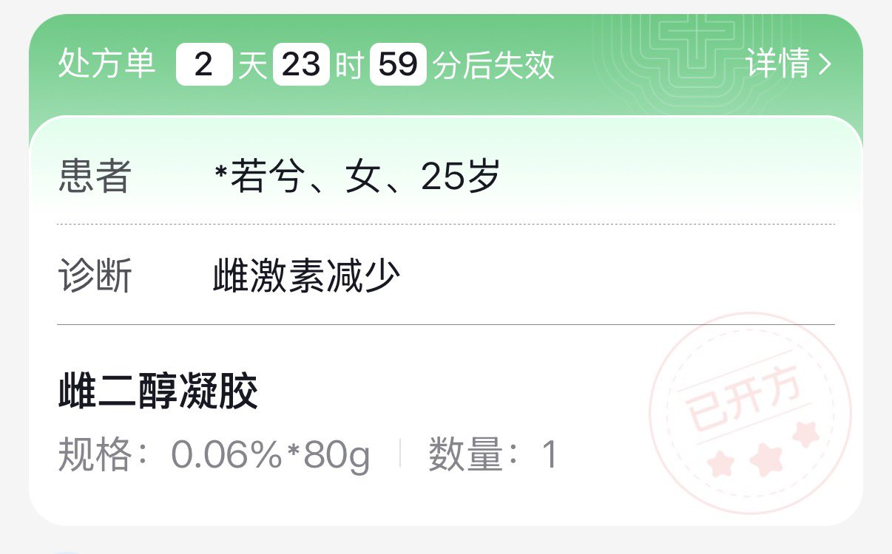

たたなこ
@tatanakots
@ServalCandle 易性症也是之前反馈上去的，最早方舟男证开不了雌激素类药物，如果你想开易性症诊断的话或许可以去找线下医院下处方然后用处方去客服通道反馈

🌸猫宮すみか🎀
@ServalCandle
因为改名之后新的身份证一直没有制作好
导致笨猫一直没法去银行改信息也就没法办新的社保卡_(:з」∠)_
所以一直到现在笨猫都只能自费从网上买药
改了证了反而要网上全款买药…
算了反正就几天的事情（
不过这个方舟建客，改证之后女证买雌激素就不能开易性症诊断了
只能开这个雌激素减少(＞人＜;) https://t.co/E2jINmj0YH